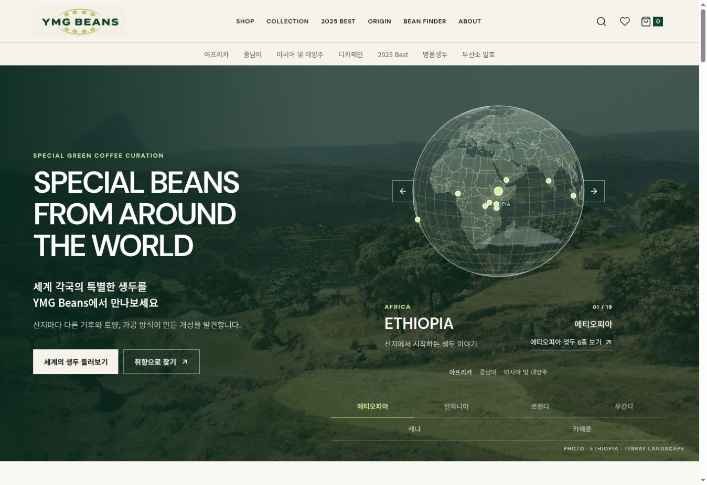
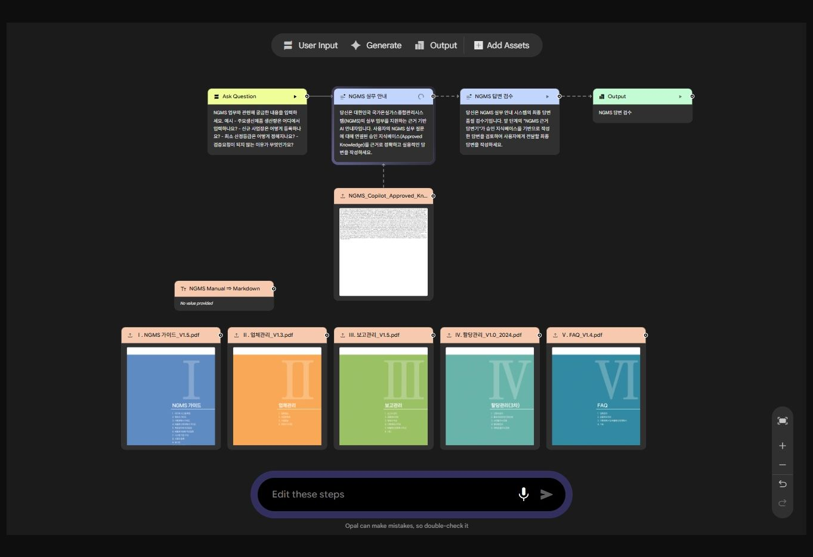
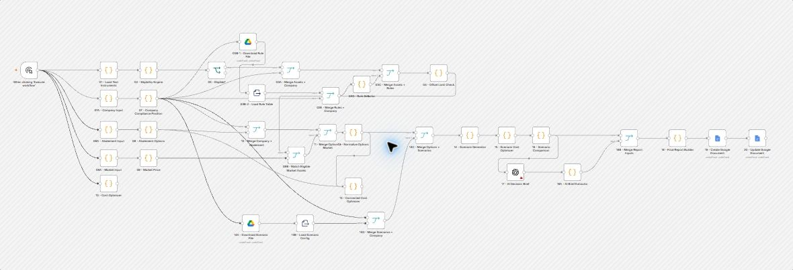
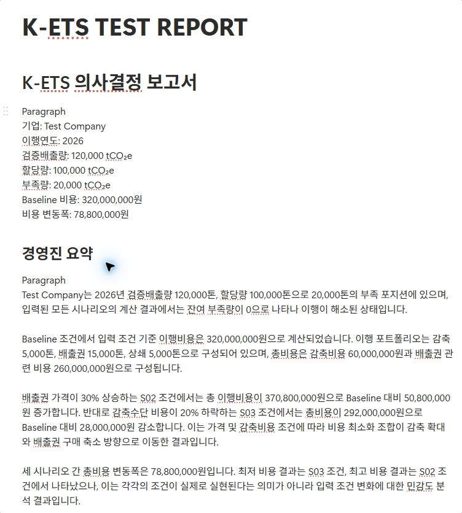
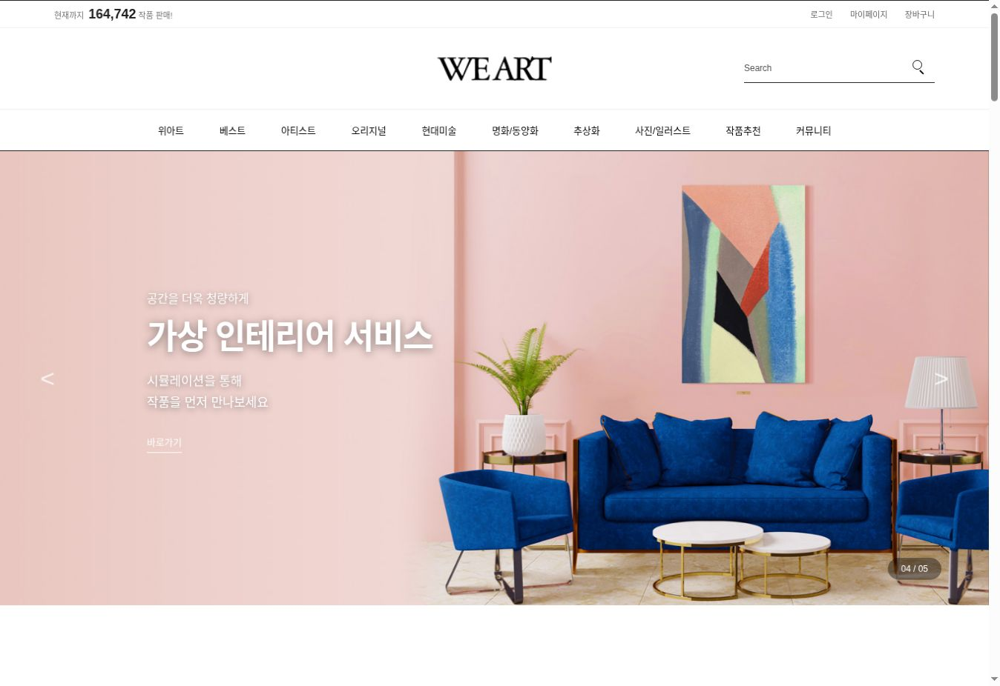
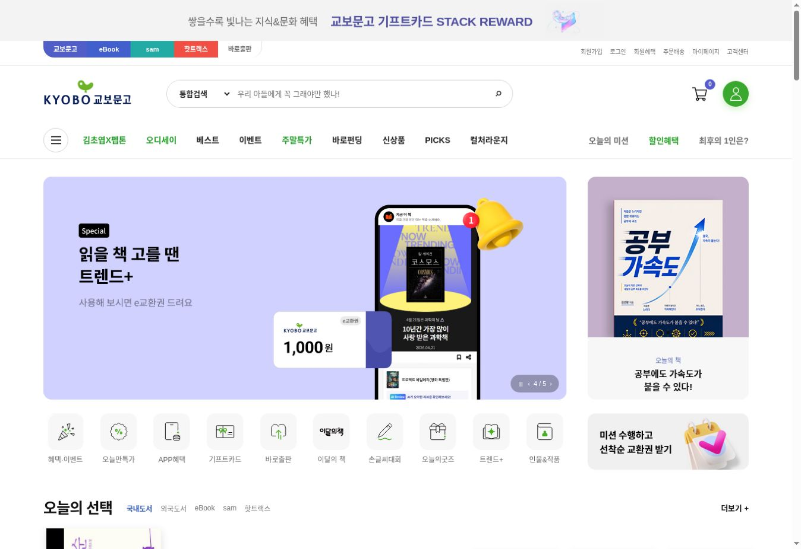
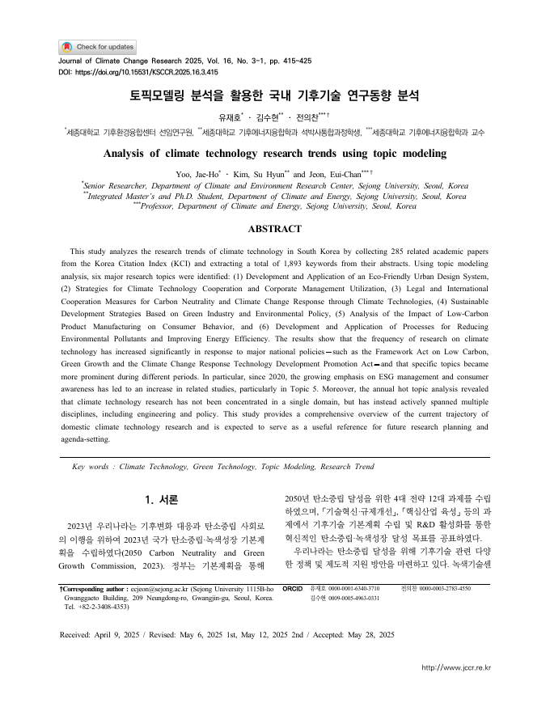

화면 확대 ↗04 · React 웹사이트
YMG BEANS
React로 만든 생두 소개 웹사이트입니다. 산지와 향미에 따라 생두를 살펴볼 수 있도록 지구본 탐색, 취향 선택, 상품 목록 화면을 구성했습니다.
사이트 보기김수현 포트폴리오
2026기후변화 연구와 개발 프로젝트를 소개합니다.
사회복지학을 전공한 뒤 기후변화를 공부했습니다.
기후변화 연구에 참여했고, 지금은 데이터 분석과 웹 개발을 배우며
기후 분야에 활용할 수 있는 프로그램을 만들고 있습니다.
전문인력 양성교육 수료 · 최우수상
기후기술 · CDM 연구동향 분석
매뉴얼 안내 도구 · 자동화 · 웹사이트
01 — 03 / 주요 프로젝트
기획과 제작 내용
화면 확대 ↗공식 PDF 매뉴얼
정리한 질문과 답변
검수 후 사용한 답변
01 · NGMS 매뉴얼 안내 도구
NGMS 사용법을 질문하면
매뉴얼에서 답을 찾아줍니다.
NGMS 매뉴얼에서 필요한 내용을 쉽게 찾을 수 있도록 만든 도구입니다. 공식 PDF 5종을 질문과 답변 형태로 정리하고 검수했습니다. 답변에는 메뉴 위치와 처리 절차, 참고한 문서의 페이지가 함께 나오도록 했습니다.

화면 확대 ↗
화면 확대 ↗보고서 예시
자동으로 작성된가상 기업 데이터로 계산한 결과입니다.
가상 데이터 · MVP02 · 배출권 이행비용 비교 도구
배출권 구매와 감축 방안별로
예상 비용을 비교합니다.
배출량과 할당량, 배출권 가격을 입력하면 대응 방안별 비용을 비교하도록 만들었습니다. n8n에서 규정 확인과 비용 계산을 처리하고, AI가 결과를 설명한 보고서를 Google Docs에 작성합니다.
가상 기업 데이터로 시험한 프로토타입입니다. 실제 업무에 적용하려면 최신 규정과 계산 조건을 추가로 검토해야 합니다.
03 · 기사 작성 시스템 · 팀 프로젝트
기사 작성과 검토를 위한
콘텐츠 관리 시스템입니다.
취재 자료와 사진을 정리하고, 기사를 작성·검토할 수 있는 시스템을 팀 프로젝트로 만들었습니다. 기자에게 받은 의견을 반영해 편집 화면을 수정하고, 초안 작성과 검수를 돕는 AI 기능을 추가했습니다.
04 — 06 / 웹 프로젝트
웹 개발을 배우며 만든 사이트입니다.
각 링크에서 직접 확인할 수 있습니다.

화면 확대 ↗04 · React 웹사이트
React로 만든 생두 소개 웹사이트입니다. 산지와 향미에 따라 생두를 살펴볼 수 있도록 지구본 탐색, 취향 선택, 상품 목록 화면을 구성했습니다.
사이트 보기
화면 확대 ↗05 · 클론 코딩
위아트 홈페이지를 참고해 만든 클론 사이트입니다. HTML·CSS로 화면을 구성하고, JavaScript로 슬라이드와 작품 목록을 구현했습니다. 작품 데이터는 JSON 파일에서 불러옵니다.
사이트 보기
화면 확대 ↗06 · 클론 코딩 · API 연동
교보문고 홈페이지를 참고해 만든 클론 사이트입니다. Kakao 책 검색 API를 연결해 도서를 검색하고, 표지·저자·가격 등의 정보를 표시했습니다. 검색 결과와 도서 추천 목록도 구성했습니다.
사이트 보기WeArt와 교보문고는 웹 개발 학습을 위해 만든 클론 사이트입니다.
연구성과 · 2025
공동저자로 참여한 논문과
공동연구 포스터입니다.

화면 확대 ↗학술논문 · 공동저자
국내 기후기술 논문 285편의 키워드 1,893개를 분석해 주요 연구주제 6개를 정리한 공동연구입니다.
NetMiner · LDA · 텍스트마이닝논문 원문 보기학술 포스터 · 공동연구
국내 청정개발체제(CDM) 관련 문헌을 LDA 토픽모델링으로 분석한 공동연구입니다. 주요 키워드와 연구주제를 포스터로 정리했습니다.
NetMiner · LDA · 문헌 분석포스터 크게 보기 ↗자격 · 교육 · 도구
에너지·온실가스 분석
에너지 수요와 온실가스 배출 시나리오를 분석하는 데 사용할 수 있습니다.
문헌 분석
논문과 포스터 연구에서 텍스트마이닝과 LDA 토픽모델링에 사용했습니다.
데이터 처리 · 자동화
Pandas로 데이터를 처리하고, n8n과 Google Opal로 자동화 도구를 만들었습니다.
React · HTML / CSS / JavaScript · Git / GitHub